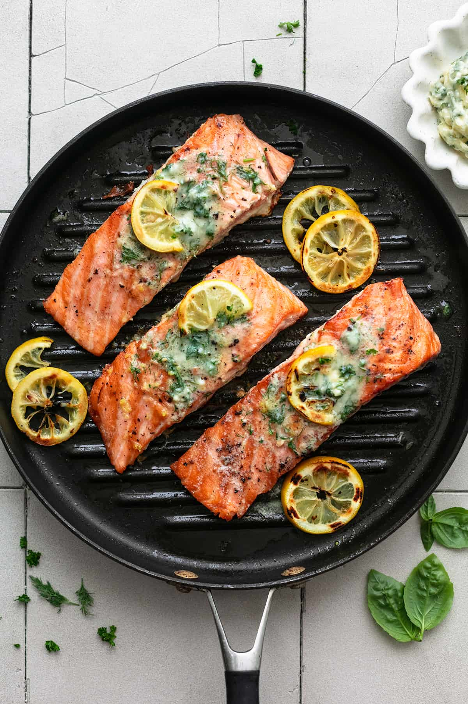

Grilled Lemon Herb Salmon Recipe
Ingredients:
- 4 salmon fillets
- 2 tablespoons olive oil
- 2 tablespoons lemon juice
- 1 teaspoon lemon zest
- 2 cloves garlic, minced
- 1 teaspoon fresh thyme, chopped
- 1 teaspoon fresh rosemary, chopped
- ½ teaspoon salt
- ¼ teaspoon black pepper
Instructions:
- Preheat grill to medium-high heat.
- In a bowl, mix olive oil, lemon juice, zest, garlic, thyme, rosemary, salt, and pepper.
- Brush the marinade over salmon fillets and let sit for 15 minutes.
- Place salmon on the grill and cook for 4-5 minutes per side until flaky.
- Serve hot with lemon wedges and fresh herbs.